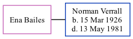

Ena Verrall (née Bailes)
[ Home ] | [ Calendar ] | [ Surnames Index ] | [ Family History ]Ena Bailes, the wife of Norman Charles Verrall (the first cousin once-removed on the father's side of Nigel Horne), and married Norman in Cannock, Staffordshire, England around Aug 19491. In 1981, she lived at 87 Roland Avenue, Coventry, Warwickshire, England2.
Citations
- England & Wales Marriages 1837-2005 - Findmypast
- According to husband's probate notice
Media
England & Wales marriages 1837-2005 Transcription - BMD-M-1949-3-AZ-001712-107
England & Wales marriages 1837-2005 - BMD/M/1949/3/AZ/000065/080
Family Tree
Generated by ged2site. Last updated on Nov 13, 2024